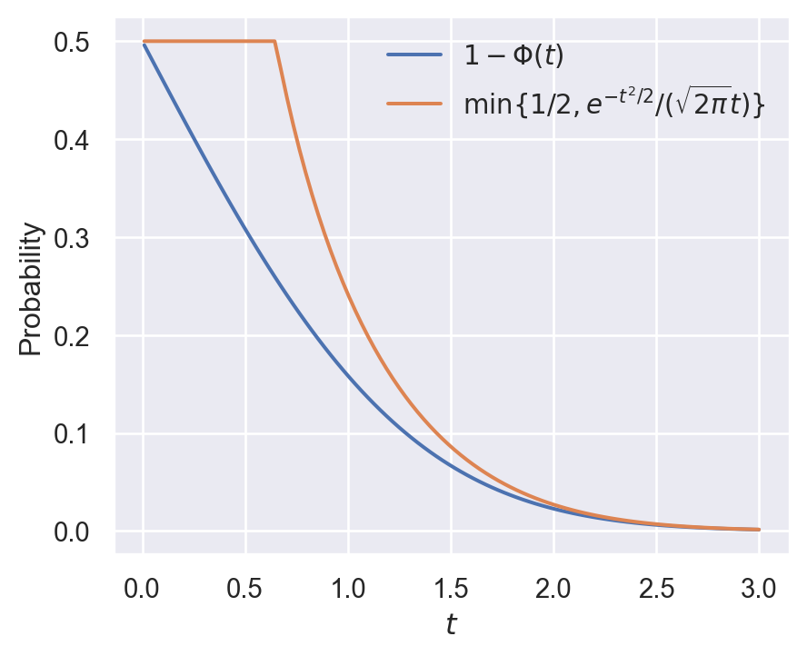

import numpy as np
import matplotlib.pyplot as plt
from scipy.stats import norm
import seaborn as sns
sns.set(style="darkgrid")62 Lecture 28.2: Stein’s Method
63 Gaussian Integration by Parts & Stein’s Lemma
Recall that if \(Z \sim \mathcal{N}(0,1)\), then Gaussian integration by parts gives \[ \mathbb{E}[Z f(Z)] = \mathbb{E}[f'(Z)] \] for every locally absolutely continuous function \(f\) for which the two expectations exist and the Gaussian boundary term vanishes. In particular, the identity holds for bounded absolutely continuous functions with bounded derivative.
The derivative \(f'\) is understood in the almost-everywhere sense. Absolute continuity instead means that, for every finite \(a<b\), \[ f(b)-f(a)=\int_a^b f'(x)\,dx. \]
The converse of this identity is also true and forms the foundation of Stein’s method.
Lemma 63.1 (Stein’s Lemma) Let \(W\) be an integrable real-valued random variable. Suppose that \[ \mathbb{E}[f'(W) - W f(W)] = 0 \] for every bounded absolutely continuous function \(f\) with \(\sup |f'| < \infty\), where a measurable version of the a.e. derivative is fixed. Then \(W \sim \mathcal{N}(0,1)\).
64 Gaussian Tail Bounds
Let \(\Phi(t) = F_Z(t) = \mathbb{P}(Z \le t)\) be the standard normal CDF.
Lemma 64.1 (Normal Tail Bound) For all \(t > 0\), \(\Phi(-t) = 1 - \Phi(t)\) satisfies: \[ \Phi(-t) = 1 - \Phi(t) \le \min\left\{ \frac{1}{2}, \, \frac{1}{\sqrt{2\pi} \, t} e^{-t^2/2}\right\}. \]
Proof (Proof of Lemma 64.1). Because \(\Phi(t) \ge \Phi(0) = 1/2\) for \(t > 0\), we have \(1 - \Phi(t) \le 1/2\). For \(t > 0\), using the standard normal density \(\phi(x) = \frac{1}{\sqrt{2\pi}} e^{-x^2/2}\): \[ 1 - \Phi(t) = \mathbb{P}(Z > t) = \frac{1}{\sqrt{2\pi}} \int_{t}^{\infty} e^{-x^2/2} \, dx \] For \(x > t > 0\), we have \(\frac{x}{t} > 1\). Therefore: \[ \begin{align*} 1 - \Phi(t) &\le \frac{1}{\sqrt{2\pi} \, t} \int_{t}^{\infty} x e^{-x^2/2} \, dx \\ &= \frac{1}{\sqrt{2\pi} \, t} \left[ -e^{-x^2/2} \right]_{t}^{\infty}\\ & = \frac{1}{\sqrt{2\pi} \, t} e^{-t^2/2}. \end{align*} \] Since both bounds hold simultaneously for all \(t > 0\), their minimum is also a valid upper bound: \[ 1 - \Phi(t) \;\le\; \min\!\left\{ \frac{1}{2},\; \frac{e^{-t^2/2}}{\sqrt{2\pi}\,t} \right\}. \]
In the following, we use Python to visualize the normal tail bound. The plot shows the standard normal CDF \(\Phi(t)\), the tail probability \(1 - \Phi(t)\), and the upper bound \(\min\{1/2, e^{-t^2/2}/(\sqrt{2\pi} t)\}\) for \(t > 0\).
# Define the range of t values
t_values = np.linspace(0.01, 3, 100)
# Compute the tail probability and the upper bound
tail_prob = 1 - norm.cdf(t_values)
upper_bound = np.minimum(0.5, np.exp(-t_values**2 / 2) / (np.sqrt(2 * np.pi) * t_values))
# Plot the results
plt.figure(figsize=(5, 4))
plt.plot(t_values, tail_prob, label='$1 - \\Phi(t)$')
plt.plot(t_values, upper_bound, label='$\min\{1/2, e^{-t^2/2}/(\sqrt{2\pi} t)\}$')
plt.xlabel('$t$')
plt.ylabel('Probability')
plt.legend(frameon=False)
plt.show()
65 Stein’s Differential Equation for the Indicator Function
For each fixed \(t \in \mathbb{R}\), consider the Stein equation, interpreted in the almost-everywhere sense: \[ f_t'(w) - w f_t(w) = \mathbf{1}_{(-\infty, t]}(w) - \Phi(t) \tag{65.1}\]
Lemma 65.1 (Solution and Bounds for Indicator Test Functions) For each \(t \in \mathbb{R}\), Equation 65.1 has a unique bounded absolutely continuous solution \(f_t\) given by: \[ f_t(w) = e^{w^2/2} \int_{w}^{\infty} e^{-x^2/2} \left( \Phi(t) - \mathbf{1}_{(-\infty, t]}(x) \right) dx \tag{65.2}\] Furthermore, \(f_t(w) = f_{-t}(-w)\). The classical derivative exists away from \(w=t\), and a measurable version \(\dot f_t\) may be chosen at \(t\) so that the Stein equation holds for every \(w\). The solution satisfies \[ \sup_w |f_t(w)| \le \sqrt{\frac{\pi}{2}}, \quad \operatorname*{ess\,sup}_w |f_t'(w)| \le 2. \]
Proof (Proof of Lemma 65.1). Step 1: Deriving the solution formula.
Multiplying both sides of Equation 65.1 by the integrating factor \(e^{-w^2/2}\) turns the left side into a derivative almost everywhere: \[ \begin{align*} \frac{d}{dw}\!\left[ e^{-w^2/2} f_t(w) \right] &= e^{-w^2/2} f_t'(w) - w\,e^{-w^2/2} f_t(w) \\ &= e^{-w^2/2}\!\left( \mathbf{1}_{(-\infty, t]}(w) - \Phi(t) \right). \end{align*} \] Integrating the absolutely continuous integrating-factor expression from \(w\) to \(R\) gives: \[ e^{-R^2/2} f_t(R) - e^{-w^2/2} f_t(w) = \int_{w}^{R} e^{-x^2/2}\!\left( \mathbf{1}_{(-\infty, t]}(x) - \Phi(t) \right) dx. \] We seek a bounded solution. Since \(e^{-R^2/2} \to 0\) as \(R \to \infty\) and \(f_t\) is bounded, the left boundary term \(e^{-R^2/2}f_t(R) \to 0\). The right-hand side converges because \(e^{-x^2/2}\) is integrable on \([w, \infty)\). Letting \(R \to \infty\) and rearranging: \[ e^{-w^2/2} f_t(w) = \int_{w}^{\infty} e^{-x^2/2}\!\left( \Phi(t) - \mathbf{1}_{(-\infty, t]}(x) \right) dx, \] and multiplying by \(e^{w^2/2}\) yields Equation 65.2. (One verifies that any other value for the constant of integration would force \(f_t\) to be unbounded.)
Step 2: Explicit evaluation by cases.
We use the identity \(\int_a^b e^{-x^2/2}\,dx = \sqrt{2\pi}\,(\Phi(b) - \Phi(a))\), so in particular \(\int_a^\infty e^{-x^2/2}\,dx = \sqrt{2\pi}(1-\Phi(a))\).
Case 1 (\(w < t\)): Split the integration range at \(x = t\). On \([w, t]\) the indicator equals 1; on \((t, \infty)\) it equals 0: \[ \begin{align*} &\int_{w}^{\infty} e^{-x^2/2}\!\left(\Phi(t) - \mathbf{1}_{(-\infty,t]}(x)\right)dx \\ &\quad= (\Phi(t)-1)\!\int_{w}^{t} e^{-x^2/2}\,dx \;+\; \Phi(t)\!\int_{t}^{\infty} e^{-x^2/2}\,dx \\ &\quad= \sqrt{2\pi}\,(\Phi(t)-1)(\Phi(t)-\Phi(w)) + \sqrt{2\pi}\,\Phi(t)(1-\Phi(t)) \\ &\quad= \sqrt{2\pi}\!\left[\Phi(t)^2 - \Phi(t)\Phi(w) - \Phi(t) + \Phi(w) + \Phi(t) - \Phi(t)^2\right] \\ &\quad= \sqrt{2\pi}\,\Phi(w)\,(1-\Phi(t)). \end{align*} \] Hence \(f_t(w) = \sqrt{2\pi}\,e^{w^2/2}\Phi(w)(1-\Phi(t))\).
Case 2 (\(w \ge t\)): For all \(x \ge w \ge t\) the indicator equals 0, so the integrand simplifies to \(e^{-x^2/2}\Phi(t)\): \[ \int_{w}^{\infty} e^{-x^2/2}\,\Phi(t)\,dx = \sqrt{2\pi}\,\Phi(t)(1-\Phi(w)). \] Hence \(f_t(w) = \sqrt{2\pi}\,e^{w^2/2}\Phi(t)(1-\Phi(w))\).
Step 3: Symmetry \(f_t(w) = f_{-t}(-w)\).
For \(w < t\), we have \(-w > -t\), so Case 2 applied to \(f_{-t}\) at the point \(-w\) gives: \[ f_{-t}(-w) = \sqrt{2\pi}\,e^{w^2/2}\,\Phi(-t)\,(1-\Phi(-w)). \] Using \(\Phi(-t) = 1-\Phi(t)\) and \(1-\Phi(-w) = \Phi(w)\) yields \(f_{-t}(-w) = \sqrt{2\pi}\,e^{w^2/2}\Phi(w)(1-\Phi(t)) = f_t(w)\). The case \(w \ge t\) is analogous.
Step 4: Bound \(\sup_w |f_t(w)| \le \sqrt{\pi/2}\).
For Case 1 (\(w < t\)): since \(\Phi\) is increasing, \(1-\Phi(t) \le 1-\Phi(w)\), so: \[ e^{w^2/2}\Phi(w)(1-\Phi(t)) \;\le\; e^{w^2/2}\Phi(w)(1-\Phi(w)) =: h(w). \] The function \(h\) is symmetric (\(h(-w) = e^{w^2/2}(1-\Phi(w))\Phi(w) = h(w)\)) and satisfies \(h(w) \to 0\) as \(|w| \to \infty\) (since the Gaussian tail bound gives \(e^{w^2/2}\Phi(w) \le ({\sqrt{2\pi}|w|})^{-1}\) for \(w < 0\) and \(e^{w^2/2}(1-\Phi(w)) \le (\sqrt{2\pi}w)^{-1}\) for \(w > 0\)). Differentiating: \[ h'(w) = e^{w^2/2}\!\left[w\Phi(w)(1-\Phi(w)) + \phi(w)(1-2\Phi(w))\right], \] which vanishes at \(w = 0\) (since \(1 - 2\Phi(0) = 0\)). To conclude that this is the global maximum, one must also check the sign of \(h'\) away from zero. The standard Mills-ratio inequalities imply \(h'(w)\le0\) for \(w>0\); symmetry then gives \(h'(w)\ge0\) for \(w<0\). Hence the maximum is: \[ h(0) = \Phi(0)(1-\Phi(0)) = \tfrac{1}{2}\cdot\tfrac{1}{2} = \tfrac{1}{4}. \] Thus \(f_t(w) \le \tfrac{\sqrt{2\pi}}{4}\) for \(w < t\). Since \(\bigl(\tfrac{\sqrt{2\pi}}{4}\bigr)^2 = \tfrac{\pi}{8} \le \tfrac{\pi}{2}\), we obtain \(f_t(w) \le \sqrt{\pi/2}\). By the symmetry from Step 3 the same bound holds for Case 2.
Step 5: Bound \(\sup_w |f_t'(w)| \le 2\).
The classical derivative has a jump of \(+1\) at \(w = t\) (the indicator is right-continuous at \(t\), so \(f_t'(t^-) = f_t'(t^+) + 1\)). We bound the derivative away from \(t\) first.
For \(w > t\) (Case 2), the ODE gives \(f_t'(w) = wf_t(w) - \Phi(t)\), hence: \[ f_t'(w) = \Phi(t)\!\left[\sqrt{2\pi}\,w\,e^{w^2/2}(1-\Phi(w)) - 1\right]. \]
- Sub-case \(w > 0\): The Gaussian tail bound \(1-\Phi(w) \le \frac{e^{-w^2/2}}{\sqrt{2\pi}\,w}\) gives \(\sqrt{2\pi}\,w\,e^{w^2/2}(1-\Phi(w)) \le 1\), so \(f_t'(w) \le 0\) and \(|f_t'(w)| \le \Phi(t) \le 1\).
- Sub-case \(t < w \le 0\) (so \(t < 0\)): By symmetry of \(\phi\), \(1-\Phi(w) = \Phi(-w)\) and the tail bound at \(-w > 0\) gives \(\sqrt{2\pi}(-w)e^{w^2/2}\Phi(-w) \le 1\), i.e., \(\sqrt{2\pi}we^{w^2/2}(1-\Phi(w)) \ge -1\). Hence \(|f_t'(w)| \le 2\Phi(t) \le 1\) (since \(\Phi(t) \le \tfrac{1}{2}\) for \(t \le 0\)).
In both sub-cases \(\sup_{w>t}|f_t'(w)| \le 1\). By the symmetry \(f_t'(w) = -f_{-t}'(-w)\) the same bound holds for \(w < t\).
At the discontinuity, the one-sided derivatives satisfy \[ |f_t'(t^-)| = |f_t'(t^+) + 1| \le |f_t'(t^+)| + 1 \le 2. \] Define the measurable version \(\dot f_t\) at \(t\) by \[ \dot f_t(t):=t f_t(t)+1-\Phi(t). \] Then \(\dot f_t(w)-wf_t(w)=\mathbf{1}_{(-\infty,t]}(w)-\Phi(t)\) for every \(w\), while \(\dot f_t=f_t'\) away from \(t\), and \(|\dot f_t(t)|\le2\).
Combining, \(\operatorname*{ess\,sup}_w |f_t'(w)| \le 2\) and \(\sup_w|\dot f_t(w)|\le2\).
66 Proof of Stein’s Lemma
Proof (Proof of Lemma 63.1). Fix \(t \in \mathbb{R}\) and apply the hypothesis to the bounded absolutely continuous test function \(f=f_t\) constructed in Lemma 65.1, using the measurable derivative version \(\dot f_t\). The bound in that lemma gives \(\sup|\dot f_t|\le2\), so \(f_t\) is admissible: \[ 0 = \mathbb{E}[\dot f_t(W) - W f_t(W)]. \] By the definition of \(\dot f_t\), the Stein equation states that \[ \dot f_t(w)-w f_t(w)=\mathbf{1}_{(-\infty,t]}(w)-\Phi(t) \] for every \(w\in\mathbb R\). Substituting \(w=W\) and taking expectations: \[ \mathbb{E}[\dot f_t(W) - W f_t(W)] = \mathbb{E}\!\left[ \mathbf{1}_{(-\infty, t]}(W) - \Phi(t) \right]. \] Finally, by linearity of expectation, \(\mathbb{E}[\mathbf{1}_{(-\infty, t]}(W)] = \mathbb{P}(W \le t)\) and \(\mathbb{E}[\Phi(t)] = \Phi(t)\) (a constant), so: \[ \mathbb{E}\!\left[ \mathbf{1}_{(-\infty, t]}(W) - \Phi(t) \right] = \mathbb{P}(W \le t) - \Phi(t). \] Chaining the three equalities: \(\mathbb{P}(W \le t) - \Phi(t) = 0\). Since \(t \in \mathbb{R}\) was arbitrary, \(F_W(t) = \Phi(t)\) for all \(t\), proving \(W \sim \mathcal{N}(0,1)\).
67 Kolmogorov Distance
Corollary 67.1 (Kolmogorov Distance Representation) Let \(W\) be a real-valued random variable with \(\mathbb{E}|W|<\infty\), and let \(Z\sim\mathcal N(0,1)\). For the measurable derivative version \(\dot f_t\) defined above: \[ |F_W(t) - \Phi(t)| = |\mathbb{E}[\dot f_t(W) - W f_t(W)]| \] \[ d_{\text{Kol}}(\mathcal L(W),\mathcal L(Z)) = \sup_{t \in \mathbb{R}} |\mathbb{P}(W \le t) - \Phi(t)| = \sup_{t \in \mathbb{R}} |\mathbb{E}[\dot f_t(W) - W f_t(W)]|. \]
68 Application to Berry-Esseen
For i.i.d. real-valued random variables \(X_1,X_2,\ldots\) with \[ \mathbb E[X_1]=0,\qquad \mathbb E[X_1^2]=1,\qquad \mathbb E|X_1|^3<\infty, \] let \(S_n=\sum_{j=1}^nX_j\) and \(W=S_n/\sqrt n\). A standard Stein-method calculation gives, for the appropriate measurable version of the indicator solution, \[ |\mathbb{E}[\dot f_t(W) - W f_t(W)]| \le \frac{3}{\sqrt{n}} \mathbb{E}|X_1|^3. \] This estimate is quoted here rather than proved; its proof uses independence, Taylor expansion, and control of the discontinuity of the indicator solution. Because the indicator function \(h = \mathbf{1}_{(-\infty, t]}\) is discontinuous, working directly with \(d_{\text{Kol}}\) is technically more involved. This motivates smoothing via Lipschitz test functions.
69 Wasserstein-1 Distance & Smooth Stein Bounds
Instead of the Kolmogorov distance, consider the Wasserstein-1 distance: \[ d_{W_1}(\mathcal L(W),\mathcal L(Z)) = \sup_{\|h\|_{\text{Lip}} \le 1} \left| \mathbb{E}[h(W)] - \mathbb{E}[h(Z)] \right| \] where \(\|h\|_{\text{Lip}} = \sup_{x \neq y} \frac{|h(x) - h(y)|}{|x - y|}\).
For a Lipschitz test function \(h\), define \(\Phi(h) = \mathbb{E}[h(Z)]\) where \(Z \sim \mathcal{N}(0,1)\). Since Lipschitz functions have at most linear growth, \(\Phi(h)\) is finite. For an integrable real-valued \(W\), consider the Stein equation: \[ f_h'(w) - w f_h(w) = h(w) - \Phi(h) \tag{69.1}\]
Taking expectations after evaluating both sides at \(W\) gives: \[ \mathbb{E}[f_h'(W) - W f_h(W)] = \mathbb{E}[h(W) - \Phi(h)] = \mathbb{E}[h(W)] - \mathbb{E}[h(Z)] \]
Theorem 69.1 (Stein’s Derivative Bounds for Lipschitz Functions) Let \(h \in \operatorname{Lip}(\mathbb{R})\), with Lipschitz seminorm \(\|h\|_{\mathrm{Lip}}\). The unique bounded solution to Equation 69.1 is: \[ f_h(w) = e^{w^2/2} \int_{w}^{\infty} e^{-x^2/2} (\Phi(h) - h(x)) \, dx \] The function \(f_h\) is \(C^1\), its derivative \(f_h'\) is locally absolutely continuous, and \(f_h''\) exists almost everywhere. The following bounds hold, with the second-derivative bound interpreted in the essential-supremum sense: \[ \sup |f_h| \le 2 \|h\|_{\mathrm{Lip}}, \quad \sup |f_h'| \le \sqrt{\frac{2}{\pi}} \|h\|_{\mathrm{Lip}}, \quad \operatorname*{ess\,sup} |f_h''| \le 2 \|h\|_{\mathrm{Lip}}. \]
Proof (Proof Sketch of Theorem 69.1). The solution formula and uniqueness follow from the same integrating-factor argument as Lemma 65.1, now with the continuous function \(h-\Phi(h)\) in place of the indicator. Lipschitz continuity of \(h\) ensures \(f_h\in C^1\) and that \(f_h'\) is locally absolutely continuous, so \(f_h''\) exists almost everywhere.
Bound \(\sup|f_h| \le 2\|h\|_{\mathrm{Lip}}\).
Write \(h(x) - \Phi(h) = (h(x)-h(w)) + (h(w)-\Phi(h))\) to split the defining integral: \[
e^{-w^2/2}f_h(w) = \underbrace{-\int_w^\infty e^{-x^2/2}(h(x)-h(w))\,dx}_{I_1(w)} - \underbrace{(h(w)-\Phi(h))\int_w^\infty e^{-x^2/2}\,dx}_{I_2(w)}.
\] For \(I_1\): \(|h(x)-h(w)| \le \|h\|_{\mathrm{Lip}}(x-w)\) for \(x \ge w\), and \[
|I_1(w)|\le \|h\|_{\mathrm{Lip}}\left(e^{-w^2/2}-w\sqrt{2\pi}(1-\Phi(w))\right).
\] For \(I_2\), use \(|h(w)-\Phi(h)|\le \|h\|_{\mathrm{Lip}}\mathbb E|Z-w|\) and \[
\mathbb E|Z-w|=2\phi(w)+w(2\Phi(w)-1).
\] Together with the Gaussian tail bound, these expressions give the required estimate for \(w>0\). For \(w<0\), apply the same calculation to \(\widetilde h(x)=h(-x)\), which has the same Lipschitz seminorm. Thus \(\sup|f_h|\le2\|h\|_{\mathrm{Lip}}\).
Bound \(\sup|f_h'| \le \sqrt{2/\pi}\,\|h\|_{\mathrm{Lip}}\).
From the ODE: \(f_h'(w) = wf_h(w) + h(w) - \Phi(h)\). At \(w = 0\) the first term vanishes, giving the exact formula \(f_h'(0) = h(0) - \mathbb{E}[h(Z)]\). Since \(|h(0)-\mathbb{E}[h(Z)]| = |\mathbb{E}[h(0)-h(Z)]| \le \|h\|_{\mathrm{Lip}}\mathbb{E}|Z| = \sqrt{2/\pi}\,\|h\|_{\mathrm{Lip}}\), the bound is tight at \(w=0\). For general \(w\), the same cancellation structure (now between \(wf_h(w)\) and the tail bound contribution from \(h(w)-\Phi(h)\)) keeps \(|f_h'(w)| \le \sqrt{2/\pi}\,\|h\|_{\mathrm{Lip}}\); see Chen–Goldstein–Shao (2011), §2.3 for the full calculation.
Bound \(\operatorname*{ess\,sup}|f_h''| \le 2\,\|h\|_{\mathrm{Lip}}\).
At almost every point where \(h'\) exists, differentiating the ODE gives \[
f_h''(w)=f_h(w)+wf_h'(w)+h'(w).
\] The standard Stein-factor calculation using the explicit solution and Gaussian tail bounds yields \[
|f_h''(w)|\le2\|h\|_{\mathrm{Lip}}
\] for almost every \(w\). The bound is therefore an essential-supremum statement, not an assertion that \(f_h''\) exists everywhere.
Corollary 69.1 (Wasserstein Distance Bound) Let \(W\) be a real-valued random variable with \(\mathbb{E}|W|<\infty\), and let \(Z\sim\mathcal{N}(0,1)\). Then, writing the laws explicitly, \[ d_{W_1}(\mathcal L(W),\mathcal L(Z)) \le \sup_{f \in \mathcal{H}} |\mathbb{E}[f'(W) - W f(W)]| \] where \(\mathcal{H}\) consists of bounded absolutely continuous functions with a measurable derivative version satisfying \[ \sup |f|\le2,\qquad \sup |f'|\le\sqrt{\frac{2}{\pi}},\qquad \operatorname*{ess\,sup}|f''|\le2. \]
70 Takeaways
1. Stein’s characterization of the Gaussian.
A real-valued integrable random variable \(W\) is \(\mathcal{N}(0,1)\) if and only if \(\mathbb{E}[f'(W) - Wf(W)] = 0\) for all functions in the specified admissible class, with the chosen measurable derivative versions. The forward direction is Gaussian integration by parts; the converse (Lemma 63.1) is proved by constructing the specific test functions \(f_t\).
2. The Stein ODE as a bridge.
The equation \(f'(w) - wf(w) = h(w) - \mathbb{E}[h(Z)]\) converts a distributional comparison (does \(W\) look like \(Z\)?) into an analytic question (how far is \(W\) from satisfying the Gaussian IBP identity?). Crucially, taking \(\mathbb{E}[\cdot]\) at \(W\) on both sides gives \[
\mathbb{E}[h(W)] - \mathbb{E}[h(Z)] = \mathbb{E}[f_h'(W) - Wf_h(W)],
\] so distances generated by such admissible test functions can be bounded by controlling the Stein operator \(\mathbb{E}[f_h' - Wf_h]\).
3. Derivative bounds are the key to Berry-Esseen.
The utility of the Stein ODE depends on the regularity of its solution. The bounds \(\sup|\dot f_t| \le 2\) (indicator case) and \(\sup|f_h'| \le \sqrt{2/\pi}\), \(\operatorname*{ess\,sup}|f_h''| \le 2\) (Lipschitz case) are what allow the expectation \(\mathbb{E}[f_h'(W) - Wf_h(W)]\) to be estimated from structural properties of \(W\) (e.g., independence or moment conditions).
4. Kolmogorov vs. Wasserstein.
The indicator solutions \(f_t\), together with the measurable derivative versions \(\dot f_t\), give the Kolmogorov distance representation: \[
d_{\mathrm{Kol}}(\mathcal L(W),\mathcal L(Z)) = \sup_{t}\,|\mathbb{E}[\dot f_t(W)-Wf_t(W)]|.
\] The Lipschitz solutions \(f_h\) give the Wasserstein-1 bound: \[
d_{W_1}(\mathcal L(W),\mathcal L(Z)) \le \sup_{f\in\mathcal{H}}\,|\mathbb{E}[f'(W)-Wf(W)]|.
\] Working with \(d_{W_1}\) is technically cleaner because the Lipschitz solutions are \(C^1\) and \(f_h'\) is continuous, while the indicator solutions have a discontinuity in their classical derivative at \(w=t\) that complicates estimates.
5. The overall strategy of Stein’s method.
To bound \(d(W, Z)\) for a given \(W\):
- Express the distance as \(\sup_h |\mathbb{E}[h(W)] - \mathbb{E}[h(Z)]|\).
- Solve the Stein ODE for each \(h\) to obtain \(f_h\).
- Rewrite using the Stein operator: \(|\mathbb{E}[h(W)] - \mathbb{E}[h(Z)]| = |\mathbb{E}[f_h'(W) - Wf_h(W)]|\).
- Exploit the structure of \(W\) (e.g., \(W = S_n/\sqrt{n}\) is a normalized sum) together with the derivative bounds on \(f_h\) to estimate the right-hand side. This is carried out for sums of i.i.d. variables in the Berry-Esseen theorem (Lecture 29).